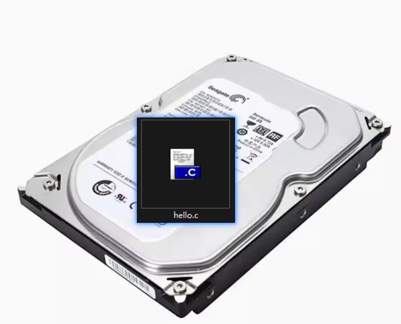
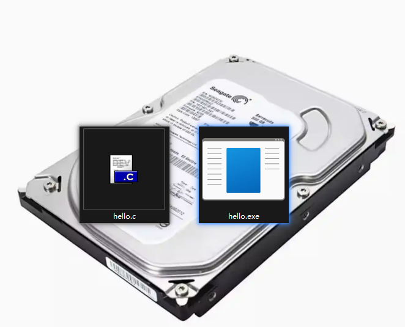
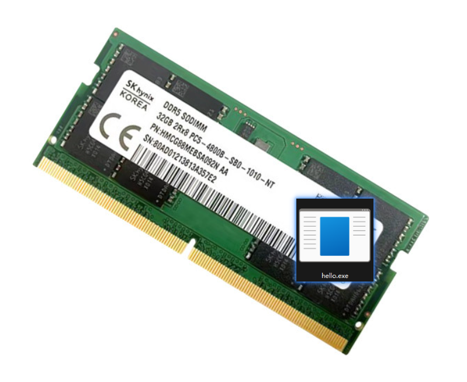
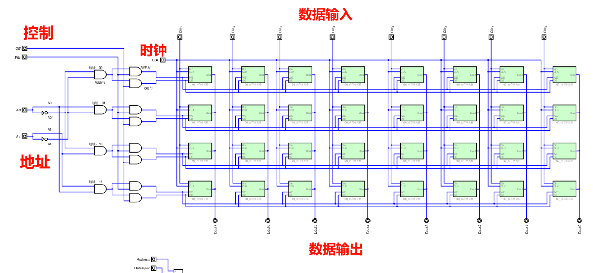
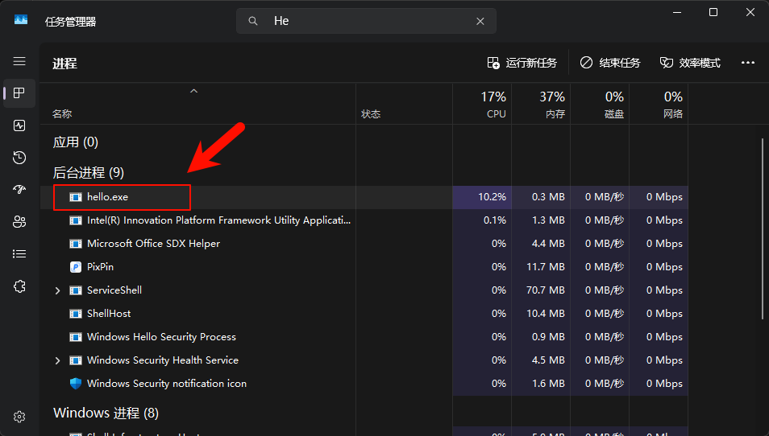
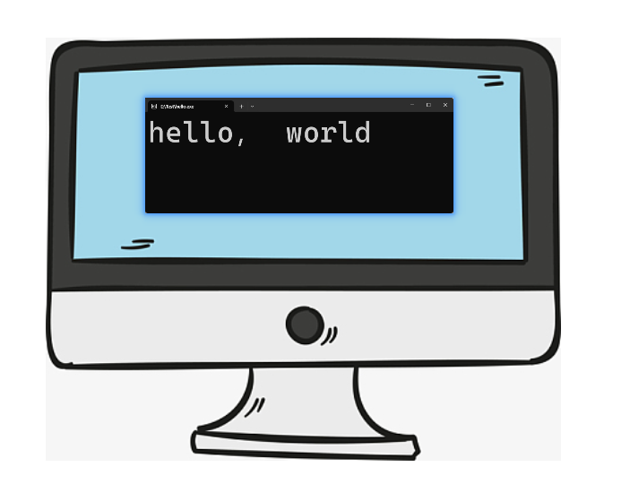

<!DOCTYPE lake>
<p data-lake-id="uffe12b3c" id="uffe12b3c"><span data-lake-id="u9cae6982" id="u9cae6982">程序是怎么"跑"起来的？</span></p><h1 data-lake-id="kfnuJ" id="kfnuJ"><span data-lake-id="u4112a893" id="u4112a893">🗃️</span><span data-lake-id="u39d36e36" id="u39d36e36">第1步： 新建hello.c</span></h1><p data-lake-id="u15c0cf8b" id="u15c0cf8b"><span data-lake-id="uba2b72fd" id="uba2b72fd">编辑源文件hello.c文件， 保存在硬盘中</span></p><span class="yuque-card-unsupported">[codeblock]</span><p data-lake-id="u0a605198" id="u0a605198"></p><p data-lake-id="u4f3b86b7" id="u4f3b86b7"><br/></p><hr/><h1 data-lake-id="WvmWN" id="WvmWN"><span data-lake-id="u6f869915" id="u6f869915">🔨</span><span data-lake-id="uc3165a68" id="uc3165a68">第2步： 编译hello.c</span></h1><p data-lake-id="uda514320" id="uda514320"><span data-lake-id="uf0330872" id="uf0330872">CPU调用gcc编译器，编译hello.c生成hello.exe可执行文件，也保存在硬盘中；</span></p><p data-lake-id="u8442dae2" id="u8442dae2"></p><hr/><h1 data-lake-id="b9zY4" id="b9zY4"><span data-lake-id="ubd4a45d0" id="ubd4a45d0">🚀</span><span data-lake-id="u77b3cafd" id="u77b3cafd">第3步： 运行hello.exe</span></h1><p data-lake-id="uc1b85132" id="uc1b85132"><span data-lake-id="uc5ce74bb" id="uc5ce74bb">CPU将hello.exe从硬盘加载到内存条；</span></p><p data-lake-id="u6419734f" id="u6419734f"><span data-lake-id="uaac85ede" id="uaac85ede">CPU开始逐条执行内存中的指令；</span></p><p data-lake-id="u5d4206be" id="u5d4206be"><span data-lake-id="u196e08b8" id="u196e08b8">【Ctrl + Shift +Esc】打开任务管理器, 可见hello.exe进程</span></p><p data-lake-id="uf7062311" id="uf7062311"></p><p data-lake-id="u65b8b31c" id="u65b8b31c"></p><p data-lake-id="u3cba8e49" id="u3cba8e49"></p><hr/><h1 data-lake-id="lNQwG" id="lNQwG"><span data-lake-id="u7d56ca0f" id="u7d56ca0f">💻</span><span data-lake-id="ud3dd1c7a" id="ud3dd1c7a">第4步： 终端输出</span></h1><p data-lake-id="uf3513680" id="uf3513680"><span data-lake-id="ude9ce7af" id="ude9ce7af">CPU执行到</span><code data-lake-id="uda103405" id="uda103405"><span data-lake-id="u1430f5fa" id="u1430f5fa">printf()</span></code><span data-lake-id="ue6fbf14b" id="ue6fbf14b"> 时，通知显卡在显示器输出hello, world，</span></p><p data-lake-id="u22a9e205" id="u22a9e205"><span data-lake-id="ueecec3eb" id="ueecec3eb">点击【</span><span data-lake-id="udf85a7de" id="udf85a7de">🚫</span><span data-lake-id="u4fadcc97" id="u4fadcc97">结束任务】，内存中的程序结束！</span></p><p data-lake-id="ufe3a0a0d" id="ufe3a0a0d"></p>